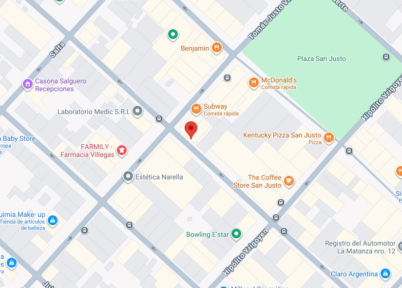

Descripcion:
- La empresa se dedica a diseñar, administrar y fiscalizar políticas públicas relacionadas con el trabajo y el empleo. Sus funciones incluyen mejorar las condiciones laborales, promover la capacitación y formación profesional, facilitar la inserción laboral, intervenir en conflictos de trabajo, y asegurar el cumplimiento de las leyes laborales y de seguridad e higiene.
Tareas:
- Recepcionar las actas de inspección.
- Ingresar las actas de inspección a la base de datos, verificar y derivar al sector correspondiente.
- Armar el planillado y todos los recursos necesarios para la correcta labor del inspector.
- Recepcionar denuncias por trabajo no registrado y asignarlas en el sistema GOI (gestión de orden de inspección)
- Archivar la documentación culminando el proceso administrativo
Fecha de ingreso:
- julio 2023
Fecha de finalización:
- Diciembre 2023
Ubicación:
- Monseñor José Francisco Marcón 3002, San Justo
